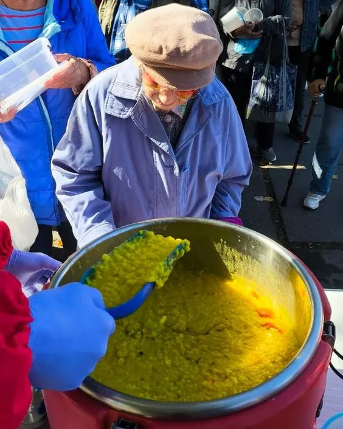

Ми годуємо людей
Гарячі вегетаріанські обіди щосуботи о 14:00 на Соборній площі.
Готуємо і годуємо — із любов'ю до людей
Форма для волонтерів відкриється українською мовою

Із рук у руки. Із серця в серце.
Ми натхненні творити й віддавати тим, у кого є потреба в любові, теплій їжі та турботі.
м. Чернівці
о 14:00
Соборна площа — тут ми роздаємо їжу щосуботи о 14:00


Як ви можете допомогти?
Приготування обідів розпочинається щосуботи о 08:00 ранку за адресою: вул. Скальда (Комарова), 40А.
- Продукти: гречка, горох, рис, цукор, борошно, олія, овочі, спеції
- Чистка овочів: допомога з підготовкою та нарізкою зранку
- Приготування: допомога безпосередньо на кухні
- Прибирання: миття баків та прибирання кухні після роздачі
- Транспорт: автомобіль або допомога з перевезенням їжі
- Фінансова підтримка: зробити внесок
Кожна, навіть найменша допомога, має величезне значення!
Куди йдуть ваші пожертви
Прозорий розподіл коштів місії
Продукти
закупівля круп, борошна, овочів, спецій, вершкового масла тощо
Паливо
для автівок доставки та генератора
Матеріали
кухонний інвентар, одноразовий посуд, пакування, засоби гігієни
Комунальні платежі
електроенергія та газ для кухні
Наші волонтери в дії
Кожної суботи готуємо та роздаємо теплі обіди


Звіт закупок фонду «Їжа життя»
- Гречка100 кг
- Борошно вищого ґатунку50 кг
- Рис100 кг
- Сіль40 кг
- Олія рафінована60 л
- Цукор150 кг
- Сода7.5 кг
- Ванільний цукор5 кг
- Лимонна кислота10 кг
- Томатна паста25 л
Підтримати «Їжу життя»
Кожна гривня стає гарячим обідом для того, хто потребує цього сьогодні.
Підтримайте місію
Кожна гривня — це теплий обід
Банківські реквізити
Для переказу з картки будь-якого банку
UA56307770000002600711126493646285356Контакти
Роман Гунчак: 050-374-0334
Telegram, Viber, WhatsApp